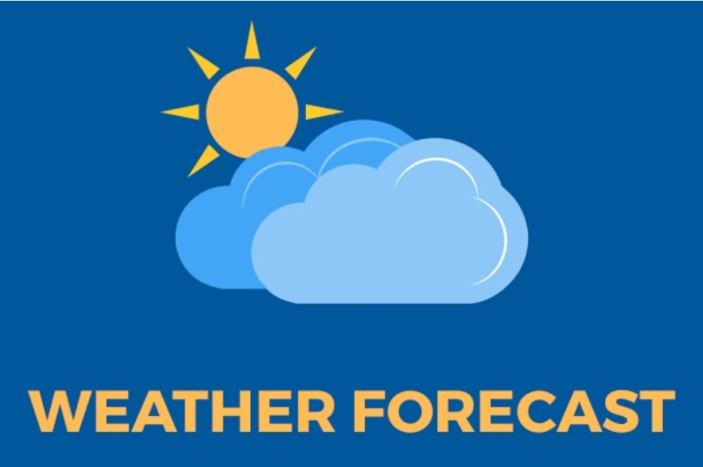

Telemedicine Access for Rural Healthcare
Developed a lightweight telemedicine platform with offline health record access to improve usability in low-connectivity regions.
HTML, CSS, Tailwind CSS, JavaScript
View RepositoryDeveloped a lightweight telemedicine platform with offline health record access to improve usability in low-connectivity regions.
HTML, CSS, Tailwind CSS, JavaScript
View Repository
Built a C++ weather application that retrieves and formats live weather data with city-based search capability.
C++, libcurl, Json/Nlohmann, OpenWeather API
View RepositoryCreated a desktop utility for deleted file recovery and temporary file cleanup to improve storage utilization and system efficiency.
Python, Tkinter, NumPy, Pandas, Matplotlib
View Repository